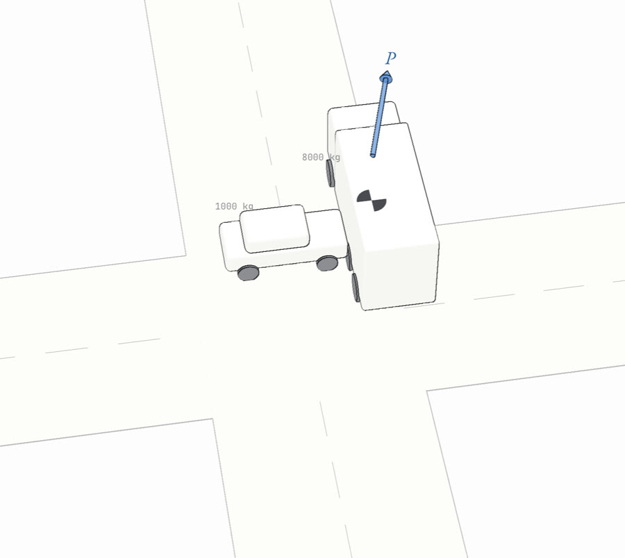
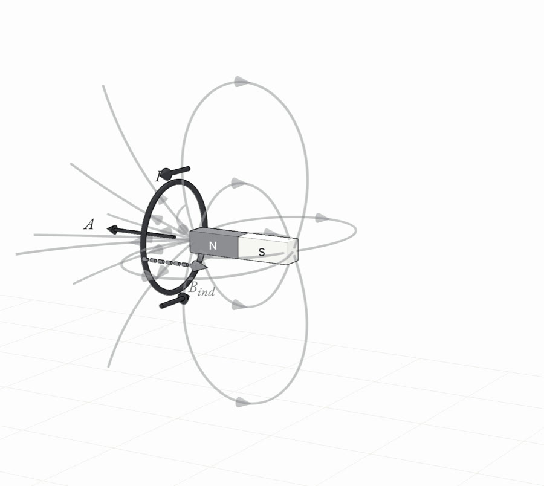
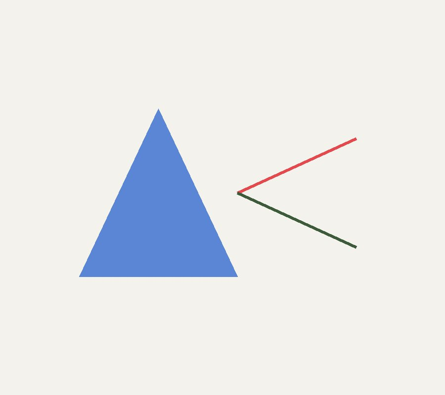

牛頓Newton
牛頓運動定律
什麼改變運動 · 受力分析 高中 · B-7／分科動力學
功與能量Energy
功與能量
由功到能量井 高中 · 分科功與能
動量Momentum
動量
動量、衝量、碰撞 高中 · 分科動量
電磁感應Induction
電磁感應
感應電動勢與磁場變化 高中 · B-9
光學Optics
光學
折射定量與透鏡加深 高中 · 加深
光學3DLab
光學3D實驗室（六站）
本地原創 · Three.js 互動光路磁學Magnetism
磁學
磁場力與螺線管等 高中 · B-9／分科